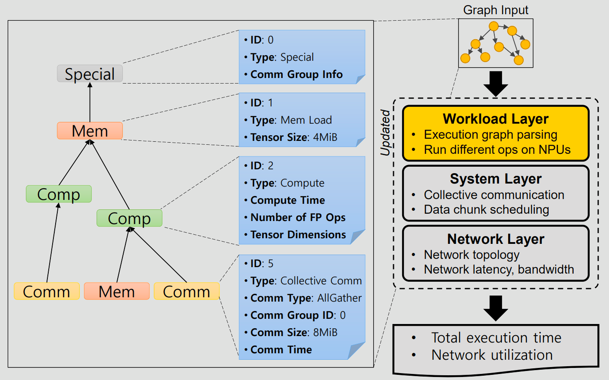

Overview
ASTRA-Sim Workload Layer Overview

The workload layer in ASTRA-Sim plays a pivotal role, enabling users to define and simulate their desired DNN models, parallelization strategies, and training loops efficiently. The transition from ASTRA-Sim 1.0 to 2.0 brought forth significant advancements, enhancing the layer’s functionality and operational efficiency.
Evolution from ASTRA-Sim 1.0 to 2.0
Initially, ASTRA-Sim 1.0 laid the groundwork by allowing users to articulate target DNN models, parallelization strategies, and training loops. With the evolution to ASTRA-Sim 2.0, the platform adopted Execution Trace (ET) from Chakra, leveraging a Directed Acyclic Graph (DAG) format for more streamlined and structured processing.
Execution Trace Support: Integration of Execution Trace from Chakra in ASTRA-Sim 2.0 allows the workload layer to utilize Chakra ET as its primary input, executing the graph efficiently. This method replaces the text-based inputs of version 1, offering a more organized and effective processing approach.
Dependency Management: The system meticulously evaluates dependencies of nodes upon completion. Once all dependencies are resolved, it processes these nodes, ensuring an efficient and uninterrupted execution flow.
Resource Management: ASTRA-Sim checks for the availability of the required hardware resources before processing a node. In cases where a resource is occupied, the system implements strategies to manage the queue or prioritize tasks, maintaining operational efficiency.
Graph-Input Workload Layer: This enhanced layer processes nodes from the ET sequentially without dependencies, with each node completing after a set number of cycles. This mirrors real-world timings of computational and communication tasks accurately.
Cycle Simulation: ASTRA-Sim 2.0 effectively simulates the requisite number of cycles for compute or communication nodes. It can draw directly from the ET or perform internal modeling for both computation and communication tasks, catering to current and future architectural needs with precision.
Chakra Trace Feeder Library
Contributed by the Chakra project, the trace feeder library is tailored for simulators, garnering adoption across numerous companies and research institutions which share and utilize traces in the Chakra schema.
C++ Implementation: The library’s implementation in C++ simplifies the parsing process, considerably reducing the engineering efforts required from users.
Functionality: Through the public member functions of the trace feeder class, users can effortlessly instantiate a trace feeder, retrieve nodes, and manage dependencies, streamlining their simulation processes.
Integration and Access
The incorporation of the Chakra ETFeeder as a submodule within the ASTRA-Sim GitHub repository signifies a major milestone, offering direct access to advanced simulation capabilities for a wide user base. For more information and to access the source code, please visit the Chakra ETFeeder on GitHub.